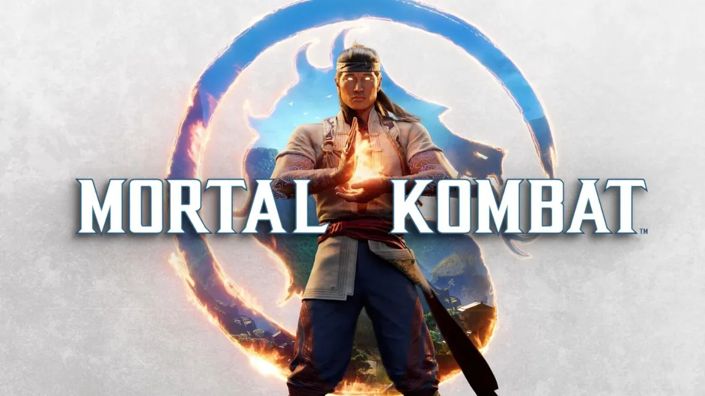

Llega una nueva era de Kombat.
NetherRealm Studios marca el comienzo de una nueva era en esta emblemática franquicia de pelea con un reinicio completo que cambiará el mundo como lo conocemos.
Después del emocionante final de Mortal Kombat 11, el todo poderoso dios del fuego, Liu Kang, ha creado una nueva era con la esperanza de traer la paz al Earthrealm y más allá. A través del modo historia más cinemático de la serie hasta ahora, volverás a encontrarte con este elenco de guerreros legendarios como nunca antes los habías visto. Vive una historia llena de giros inesperados en las clásicas amistades y rivalidades, y disfruta de los nuevos trasfondos que cambiarán todo lo que crees que sabes sobre tus Kombatientes favoritos.
Descubre muchísimos modos de juego en línea y sin conexión para dominar este sistema de pelea renovado, que incluye Fatal Blows rompehuesos, Breakers defensivos y las Fatalities más violentamente creativas hasta la fecha.